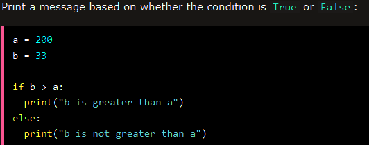

Booleans represent one of two values: True(1) or False(0)

The bool() function allows you to evaluate any value, and give you True or False in return


One more value, or object in this case, evaluates to False , and that is if you have an object
that is made from a class with a __len__ function that returns False or 0

code can be execute based on the Boolean answer of a function:

Python also has many built-in functions that return a boolean value, like the isinstance() function,
which can be used to determine if an object is of a certain data type: